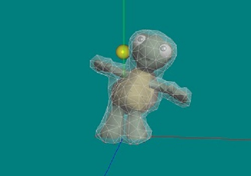
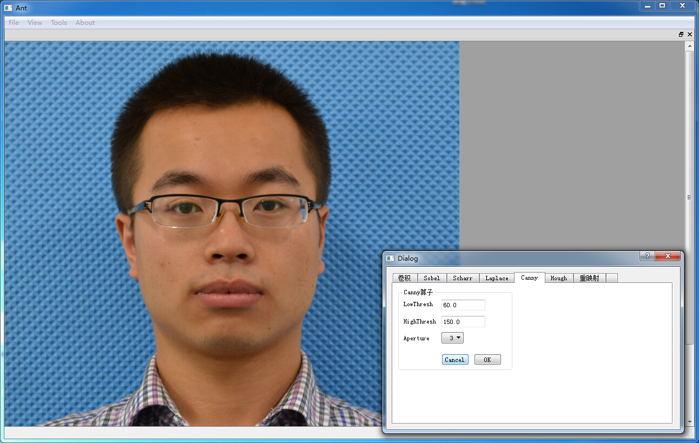
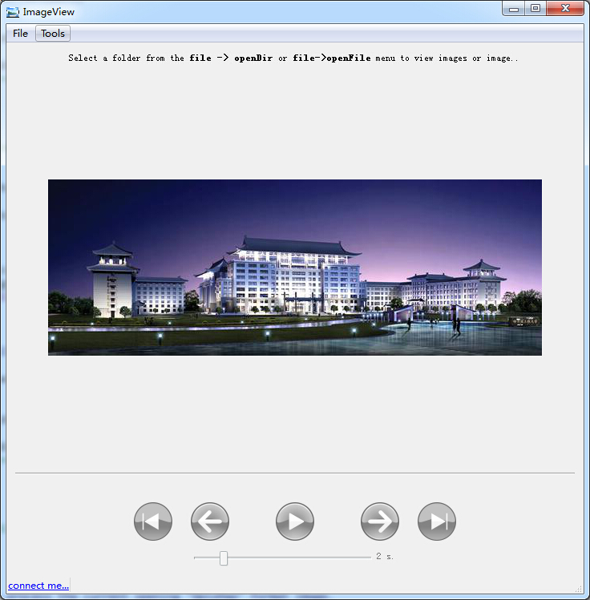

项目经历
实验室主要从事于虚拟现实技术和图像处理工作的研究。
01. 脑神经图像处理工作研究
项目描述（独立完成）：生物图像信息学是一门新兴的科学，是我们实验室在虚拟现实、 声呐图像处理和仿生水下机器鱼研究之后新接入的一项研究课题。我们与国际知名教授黄昆合作，专门做一些生物图像处理算法的研究工作。
项目时间: 2015/4~2015~7 个人工作： 研究超大脑神经图像的配准算法、线形结构的分割算法和神经结构示踪算法。 最终目的： 重建脑神经的三维结构

02. 基于LeapMotion的物理实时碰撞
项目描述： 该课题主要利用Qt自带的OpenGL搭建一个图形渲染系统，通过读取三维模型，并生成Bullet碰撞检测可用的软体碰撞检测对象。然后通过实时读取LeapMotion的位置等相关信息，实现刚体球与软体对象进行碰撞检测，最后通过Bullet的实时解算完成模型的形变效果，达到交互游戏设计的目的。
项目时间： 2015/3~2015~4
个人工作（参与学习）： 掌握了碰撞检测Bullet库的使用方法，学习了一些三维图形学的知识。

03. 布料形变仿真
项目描述（参与学习）： 该项目主要利用OpenGL实现布料等柔软织物在重力作用下与刚体对象的碰撞以及变形效果，该系统主要包括柔软织物和刚体等三维模型的加载、基于三角网格碰撞检测模型的匹配，纹理贴图等。通过该系统可进一步用于开发三维虚拟试衣系统。
项目时间： 2015/1~2015~3

04. 基于OpenCV的图像处理平台界面设计
项目描述（独立完成）： 该项目主要将Qt优良的界面设计风格和OpenCV图像处理工具包结合起来，将一些通用的图像处理算法（比如Canny边缘检测）以界面的形式呈现出来。
项目时间： 2014/9~2014/10
完成情况： 该工作以学习Qt和OpenCV为目的，现在回头一看，代码写的很糟糕。

05. [基于OpenCV的图像处理平台界面设计]https://github.com/yajunyang/ImgP)
项目描述（独立完成）： 该项目主要将Qt优良的界面设计风格和OpenCV图像处理工具包结合起来，将一些通用的图像处理算法（比如Canny边缘检测）以界面的形式呈现出来。
